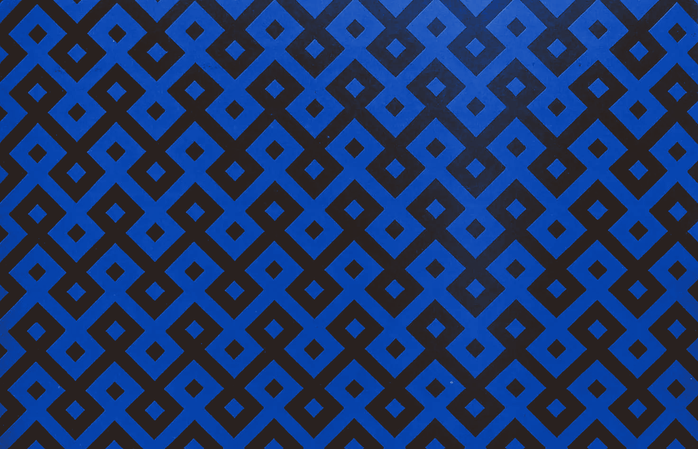

The uniforms of
Dirk Bikkembergs


In 1982, the Royal Academy of Fine Arts in Antwerp unleashed a storm that would change fashion forever: the Antwerp Six. Among them was Dirk Bikkembergs, a man who entered the Academy with absolutely no fashion background whatsoever but a restless hunger to create something beautiful. His vision was simple: «Nike, Bruce Weber and Giorgio Armani. If you throw all three into a blender, that's my vision».
In 2021, Bikkembergs donated 58 iconic looks from his private archive to MoMu, a collection spanning from 1988 to 2012.